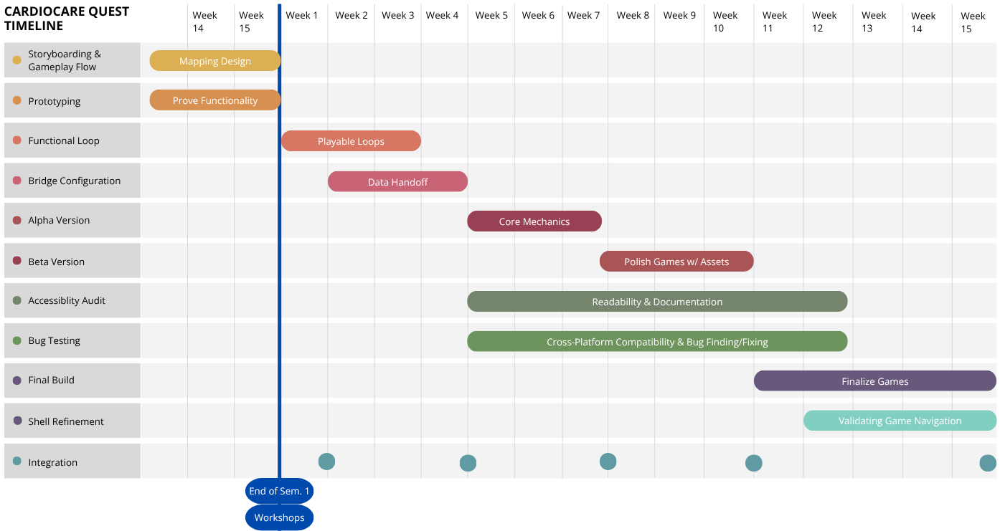

Schedule

By integrating these features, CardioCare Quest hopes to build a strong base for the future of
medical data collection whilst also having broader implications in the world of culturally
responsive digital health innovations.
Our team will utilize a phase-based development approach. This begins with requirements
acquisition via meetings with Dr. Jared Duval as well as team leads for the CardioCare Quest
and NetGauge projects.
Milestones
Conceptualize and finalize storyboards for all 5 games during sessions with the PHT Lab to ensure a proper base for the game development phase.
Build individual prototypes for each of the 5 factors, focusing on establishing the functionality required for each unique gameplay mechanic.
Establish the first playable loop for each game to verify proper state management and data handoff functionality.
Properly establish the Twine-to-Flutter communication bridge to ensure that all hypertension metrics can be sent to the backend database.
Tie together all core mechanics and systems required for each game using placeholders or other unpolished assets to create a feature-complete system despite lacking polish.
Replace all placeholder assets with completed versions of text, audio, images, and other content while also refining gameplay functionality and focusing on bug fixing.
Perform a comprehensive audit of the entire codebase to ensure it is organized, understandable, and well documented for future community use. This also includes assessing compliance with accessibility standards.
Perform final testing for Android and iOS compatibility and conduct any other required tests for usability, accessibility, and bug finding.
Finalize a release candidate build, ensuring that there are no major bugs and that game mechanics are fully fleshed out and tested.
Finalize any changes required for the Flutter app shell, ensuring proper navigation between all sections of the platform. Twine games will also be fully integrated into the platform at this point for usage.